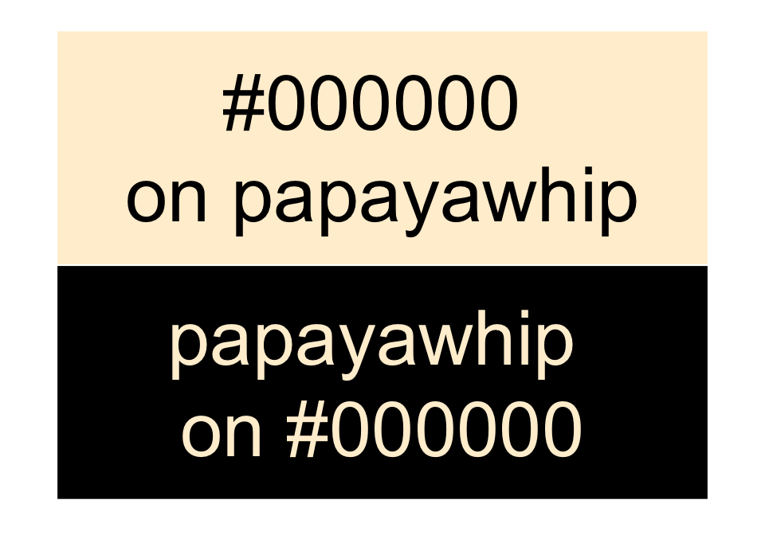
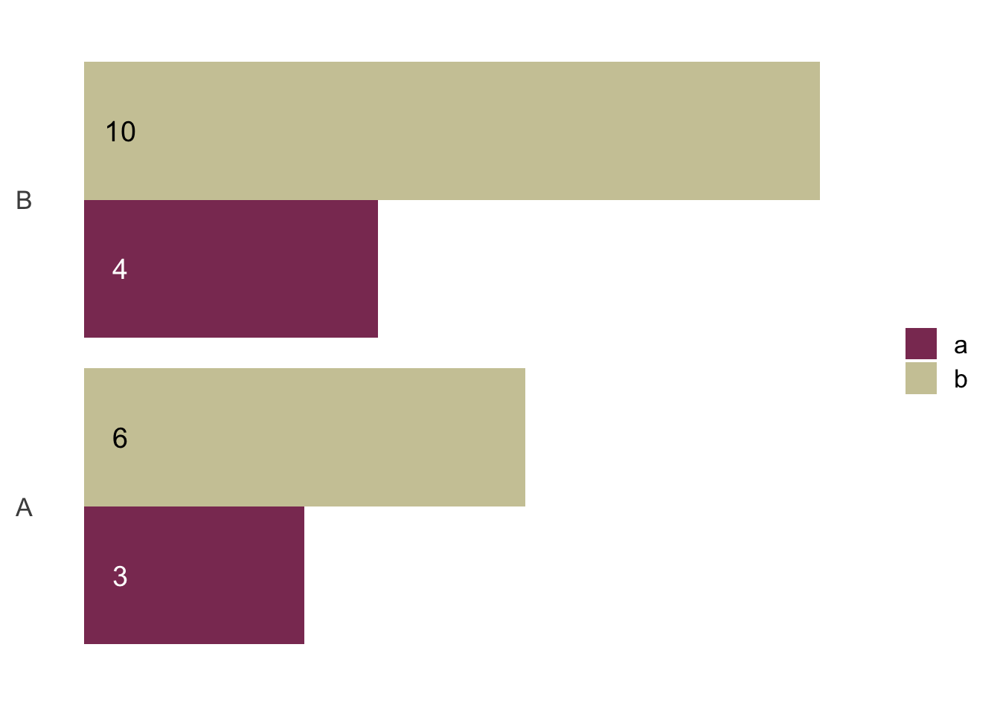

install.packages("remotes") # if not yet installed
remotes::install_github("matt-dray/coloratio")tl;dr
I made a small R package called {coloratio} to evaluate colour-contrast ratios for accessibility. Then I found out that {savonliquide} already exists to do this.
Accessible charts
The UK government’s website, GOV.UK, was developed with user needs and accessibility in mind. I’ve been using {ggplot2} to recreate the simple, accessible chart styles suggested for use on GOV.UK by the Government Statistical Service.
But I wondered: is it possible to programmatically select a high-contrast text colour to overlay the fill colours of a {ggplot2} barplot? You would want black text over white and vice versa, for example.
What is ‘high contrast’ anyway? GOV.UK’s Design System refers to W3C’s contrast guidance from WCAG 2.1, which suggests a ratio of 4.5:1 for regular text on a block-coloured background.
It isn’t a big deal to program this ‘manually’, but that’s not fun.
Ratio calculation
Is the contrast accessible?
How about a small package with some functions to derive colour contrast ratios? Introducing {coloratio}.
Pass two colours to cr_get_ratio() as hex values or named colours—see colors()—and it performs the necessary calculations to derive relative luminance and return a colour contrast ratio.
library(coloratio) # attach package
cr_get_ratio(
"papayawhip", "#000000", # colours to compare
view = TRUE # optional demo of colours
)
[1] 18.55942This contrast value is above the 4.5 threshold, so we’re good to go. You’ll get a warning if the contrast is insufficient.
cr_get_ratio("olivedrab", "olivedrab2")Warning in cr_get_ratio("olivedrab", "olivedrab2"): Aim for a value of 4.5 or higher.[1] 2.755693Surprise: as stunning as an all-olivedrab palette might be, these colours aren’t distinct enough to be accessible.
Black or white?
cr_get_ratio() in turn powers the function cr_choose_bw(), which returns black or white depending on the greatest contrast with a supplied background colour.
cr_choose_bw("snow")[1] "black"cr_choose_bw("saddlebrown")[1] "white"To demonstrate better, let’s create a grouped barplot with lighter (lemonchiffon3) and darker (hotpink4) fill colours, then use cr_choose_bw() to choose black or white for the overlaying text.
library(tidyverse) # for data manipulation
# Example data
d <- data.frame(
x_val = c("A", "A", "B", "B"),
y_val = c(3, 6, 4, 10),
z_val = c("a", "b", "a", "b")
) %>%
mutate( # add colour columns
fill_col = rep(c("hotpink4", "lemonchiffon3"), 2),
text_col = map_chr(fill_col, cr_choose_bw)
)
d # preview x_val y_val z_val fill_col text_col
1 A 3 a hotpink4 white
2 A 6 b lemonchiffon3 black
3 B 4 a hotpink4 white
4 B 10 b lemonchiffon3 blackNo surprise: white was returned for the darker fill and black for the lighter fill.
We can now refer to this information in the colour argument of geom_text().
ggplot(d, aes(x_val, y_val, fill = z_val)) +
geom_bar(position = "dodge", stat = "identity") +
scale_fill_manual(values = d$fill_col) + # fill colour
geom_text(aes(y = 0.5, label = y_val),
position = position_dodge(0.9),
size = 5, colour = d$text_col) + # text colour
coord_flip() +
theme_minimal(base_size = 16) + # clean up the theme
theme(axis.text.x = element_blank(), axis.title = element_blank(),
legend.title = element_blank(), panel.grid = element_blank())
As desired: black on the lighter fill; white on the darker fill. The default would be black text, which would provide insufficient contrast for darker fills.
Aside: cr_choose_bw() in geom_text()?
Originally I wanted geom_text() to choose text colours on the fly, rather than adding them to the input data. This roundabout solution—which outputs a similar plot to the one above—requires you to build the plot object, then interrogate it with ggplot_build() to identify the bar-fill colours.
# Build simple grouped barplot again
p <- ggplot(d, aes(x_val, y_val, fill = z_val)) +
geom_bar(position = "dodge", stat = "identity") +
scale_fill_manual(values = c("hotpink4", "lemonchiffon3")) +
coord_flip()
# Extract the p-object fills and choose text overlay colour
p + geom_text(
aes(y = 0.5, label = y_val), position = position_dodge(0.9), size = 5,
colour = map_chr( # make text colour dependent on bar colour
ggplot_build(p)[[1]][[1]]$fill, # access p-object fills
coloratio::cr_choose_bw # choose black/white text based on fill
)
)I put this to the RStudio Community with no answer to date. Let me know if you have any ideas.
A soapy slip-up
Having addressed my need, I was suspicious. Surely this has been done in R before?
Whoops. {savonliquide} by Ihaddaden M. EL Fodil can query the WebAIM contrast checker API to get the contrast ratio for two colours. And it’s on CRAN.
install.packages("savonliquide")Maybe I missed it because of the name, which translates to ‘liquid soap’?
Anyway, like coloratio::cr_get_ratio(), you can pass two hex values or named colours to {savonliquide}’s check_contrast() function.
savonliquide::check_contrast("blanchedalmond", "bisque2")
* The Contrast Ratio is 1.03
* The result for the AA check is : FAIL
* The result for the AALarge check is : FAIL
* The result for the AAA check is : FAIL
* The result for the AAALarge check is : FAILThe output is richer than coloratio::cr_get_ratio(). You can see here that the supplied colours fail additional accessibility checks from WCAG 2.1 that involve large text and more stringent contrast thresholds.
Handily, there’s also the savonliquide::check_contrast_raw() variant that returns a list with each result as an element.
Acceptance
So… should you wash your hands of {coloratio}?1 Well, it fills the micro-niche of an R package that doesn’t require an internet connection to fetch colour contrast ratios. But it’s probably never going to go on CRAN, so you should use {savonliquide}.
I certainly learnt a lesson about due diligence during package development. Especially because I also discovered recently that I had also somehow managed to reinvent the {badger} package with my own {badgr} package.2 Whoops again.
At worst, I got to learn more about accessibility, practice some package building, and solve my initial problem (kinda).
I also got to admire the creativity of the names in the named-colour set. ‘Papayawhip’ sounds really appealing. Or perhaps painful. Just like package development.3
{kind=link}
Environment
Session info
Last rendered: 2024-07-14 20:28:01 BSTR version 4.4.0 (2024-04-24)
Platform: aarch64-apple-darwin20
Running under: macOS Ventura 13.2.1
Matrix products: default
BLAS: /Library/Frameworks/R.framework/Versions/4.4-arm64/Resources/lib/libRblas.0.dylib
LAPACK: /Library/Frameworks/R.framework/Versions/4.4-arm64/Resources/lib/libRlapack.dylib; LAPACK version 3.12.0
locale:
[1] en_US.UTF-8/en_US.UTF-8/en_US.UTF-8/C/en_US.UTF-8/en_US.UTF-8
time zone: Europe/London
tzcode source: internal
attached base packages:
[1] stats graphics grDevices utils datasets methods base
other attached packages:
[1] lubridate_1.9.3 forcats_1.0.0 stringr_1.5.1
[4] dplyr_1.1.4 purrr_1.0.2 readr_2.1.5
[7] tidyr_1.3.1 tibble_3.2.1 ggplot2_3.5.1
[10] tidyverse_2.0.0 coloratio_0.0.0.9004
loaded via a namespace (and not attached):
[1] gtable_0.3.5 jsonlite_1.8.8 crayon_1.5.3.9000 compiler_4.4.0
[5] tidyselect_1.2.1 scales_1.3.0 yaml_2.3.8 fastmap_1.2.0
[9] R6_2.5.1 labeling_0.4.3 generics_0.1.3 curl_5.2.1
[13] knitr_1.46 htmlwidgets_1.6.4 munsell_0.5.1 pillar_1.9.0
[17] tzdb_0.4.0 rlang_1.1.4.9000 utf8_1.2.4 savonliquide_0.2.0
[21] stringi_1.8.3 xfun_0.43 timechange_0.3.0 cli_3.6.3.9000
[25] withr_3.0.0 magrittr_2.0.3 digest_0.6.35 grid_4.4.0
[29] rstudioapi_0.16.0 hms_1.1.3 lifecycle_1.0.4 vctrs_0.6.5
[33] evaluate_0.23 glue_1.7.0 farver_2.1.1 fansi_1.0.6
[37] colorspace_2.1-0 httr_1.4.7 rmarkdown_2.26 tools_4.4.0
[41] pkgconfig_2.0.3 htmltools_0.5.8.1
Footnotes
I assure you this is an excellent savon liquide pun.↩︎
{badger} has functions to generate a bunch of badges you’re likely to want. {badgr} focuses only on custom badges and has some extra options relative to
badger::badge_custom(), like the ability to add an icon. But wow, how did I miss this?↩︎#deep↩︎
Reuse
CC BY-NC-SA 4.0